¿Cómo funciona la virología?
Autor:
Juan Esteban Rivera García
Código JavaScript para el libro: Joel Espinosa Longi, IMATE, UNAM.
Recursos interactivos: DescartesJS, Herramientas de IA, ChatGPT y Gemini.
Fuentes: Lato y UbuntuMono
Imagen de portada: ilustración generada por GPT Image 2
Red Educativa Digital Descartes
Córdoba (España)
descartes@proyectodescartes.org
https://proyectodescartes.org
Proyecto iCartesiLibri
https://proyectodescartes.org/iCartesiLibri/index.htm
ISBN: 978-84-10368-58-3

Esta obra está bajo una licencia Creative Commons 4.0 internacional: Reconocimiento-No Comercial-Compartir Igual.
Este libro forma parte de la colección ¿Cómo funciona?, una serie de publicaciones concebida para explicar, de manera clara, rigurosa y accesible, los principios fundamentales que gobiernan los fenómenos científicos, tecnológicos y naturales que influyen en nuestra vida cotidiana. Cada volumen de la colección busca responder preguntas esenciales mediante un enfoque didáctico, apoyado en ilustraciones, recursos multimedia e interactividad, con el propósito de facilitar un aprendizaje significativo tanto para estudiantes como para docentes y lectores interesados en comprender el funcionamiento del mundo que los rodea.
En esta obra, dedicada a la virología, el lector descubrirá cómo los virus están estructurados, cómo se replican, cómo interactúan con el sistema inmunitario, cómo funcionan las vacunas y cuáles son las principales estrategias para el diagnóstico y la prevención de las enfermedades virales. Más que presentar una colección de conceptos, el libro pretende mostrar la lógica biológica que explica el comportamiento de estos agentes infecciosos y la forma en que la ciencia ha logrado comprenderlos para proteger la salud pública.
Uno de los elementos diferenciadores de esta publicación es la incorporación de objetos interactivos tridimensionales que permiten explorar estructuras moleculares reales de virus, proteínas, anticuerpos y complejos biológicos de interés. Estos recursos han sido desarrollados mediante iCn3D Structure Viewer, una aplicación de código abierto creada por el National Center for Biotechnology Information (NCBI) y disponible en https://github.com/ncbi/icn3d. Esta herramienta no solo funciona como un visor molecular 3D basado en la web, sino que también constituye una potente plataforma para el análisis interactivo de estructuras biomoleculares, permitiendo examinar proteínas, ácidos nucleicos, sitios de unión, interacciones
moleculares, mutaciones y otras características estructurales directamente desde el navegador, sin necesidad de instalar software especializado. La integración de estos modelos tridimensionales transforma la experiencia de lectura en una experiencia de exploración científica. El lector puede rotar, ampliar, ocultar componentes, cambiar representaciones y analizar detalles estructurales que complementan las explicaciones del texto. De esta manera, conceptos que tradicionalmente solo podían apreciarse mediante imágenes estáticas cobran vida y adquieren una nueva dimensión educativa.
Asimismo, el libro incorpora infografías, ilustraciones generadas con GPT Image 2, videos educativos y otros recursos digitales cuidadosamente seleccionados para enriquecer el aprendizaje. La combinación de contenidos escritos con herramientas interactivas responde a un modelo educativo moderno, en el que la visualización, la experimentación y la participación activa favorecen una comprensión más profunda de procesos biológicos complejos.
Esperamos que esta obra contribuya no solo al aprendizaje de la virología, sino también al desarrollo de la curiosidad científica y del pensamiento crítico. Comprender cómo funcionan los virus significa comprender mejor algunos de los mayores desafíos sanitarios de la humanidad y valorar el papel de la investigación científica en el desarrollo de vacunas, tratamientos y estrategias de prevención que protegen la vida. Bienvenido a este nuevo libro de la colección ¿Cómo funciona? Lo invitamos a leer, explorar e interactuar con cada uno de sus recursos, convencidos de que el conocimiento se fortalece cuando la explicación, la visualización y la experimentación se integran en una sola experiencia de aprendizaje.
Juan Esteban Rivera García
2026
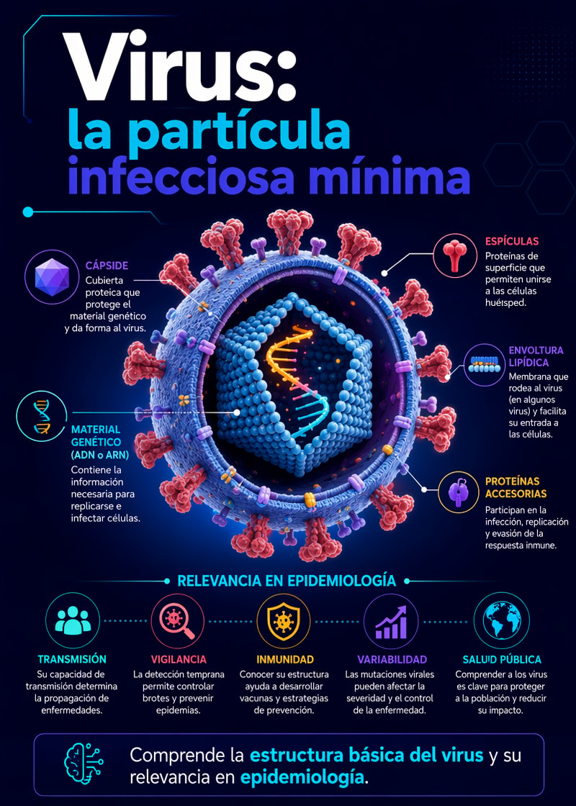
La virología es la rama de la biología que se dedica al estudio de los virus, entidades biológicas fascinantes y omnipresentes que desempeñan roles cruciales en la salud humana, animal y vegetal, así como en los ecosistemas globales. Estos agentes infecciosos microscópicos son mucho más pequeños que las bacterias y requieren de un huésped vivo para poder replicarse. Su naturaleza única, que a menudo se encuentra en la frontera entre lo vivo y lo no vivo, los convierte en objetos de estudio de inmensa complejidad y continuo descubrimiento.
En su nivel más fundamental, un virus es una partícula infecciosa compuesta por material genético (ya sea ADN o ARN) encerrado en una cubierta proteica llamada cápside. Algunos virus también poseen una envoltura lipídica externa derivada de la membrana celular del huésped. El principio de funcionamiento de un virus se basa en su capacidad para secuestrar la maquinaria celular del huésped. Una vez que un virus infecta una célula, inyecta su material genético y fuerza a la célula a producir nuevas copias del virus.
Los componentes principales de un virus, más allá de su genoma y cápside, pueden variar. Algunos virus pueden codificar enzimas esenciales para su replicación, mientras que otros dependen completamente de las enzimas del huésped. El proceso interno de infección viral es una batalla molecular constante. El virus se une a la superficie de una célula susceptible, introduce su material genético, y luego utiliza los recursos celulares (ribosomas, enzimas, energía) para ensamblar nuevas partículas virales. Finalmente, estas nuevas partículas son liberadas de la célula, a menudo destruyéndola en el proceso, para infectar a otras células.
Las aplicaciones prácticas de la virología son vastas y abarcan desde la medicina hasta la biotecnología. El desarrollo de vacunas ha sido uno de los mayores triunfos de la virología, previniendo innumerables enfermedades mortales como la viruela, la polio y el sarampión. Además, los virus se utilizan como herramientas en terapia génica y como vectores para administrar medicamentos o modificar células. Sin embargo, también presentan desafíos significativos, como la resistencia a los antivirales y la capacidad de los virus para mutar rápidamente, lo que dificulta el desarrollo de tratamientos y vacunas efectivas a largo plazo.
Un caso real que ilustra la importancia de la virología es la pandemia de COVID-19, causada por el coronavirus SARS-CoV-2. El estudio intensivo de este virus, desde su estructura y genoma hasta su mecanismo de infección y transmisión, fue fundamental para desarrollar vacunas y tratamientos en un tiempo récord. La virología nos permite comprender la naturaleza de estas amenazas, desarrollar estrategias de defensa y, en última instancia, proteger la salud pública.
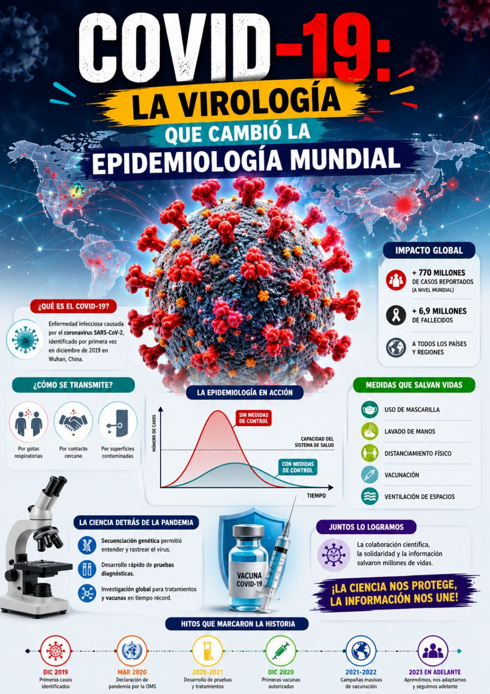
Un virus, en su esencia más básica, es un agente infeccioso microscópico incapaz de reproducirse por sí mismo. Su concepto fundamental reside en su estructura simplificada y su dependencia obligatoria de células huésped para llevar a cabo su ciclo vital. Carecen de la maquinaria celular necesaria para la replicación, como ribosomas o mitocondrias, por lo que secuestran los mecanismos de una célula viva para crear copias de sí mismos.
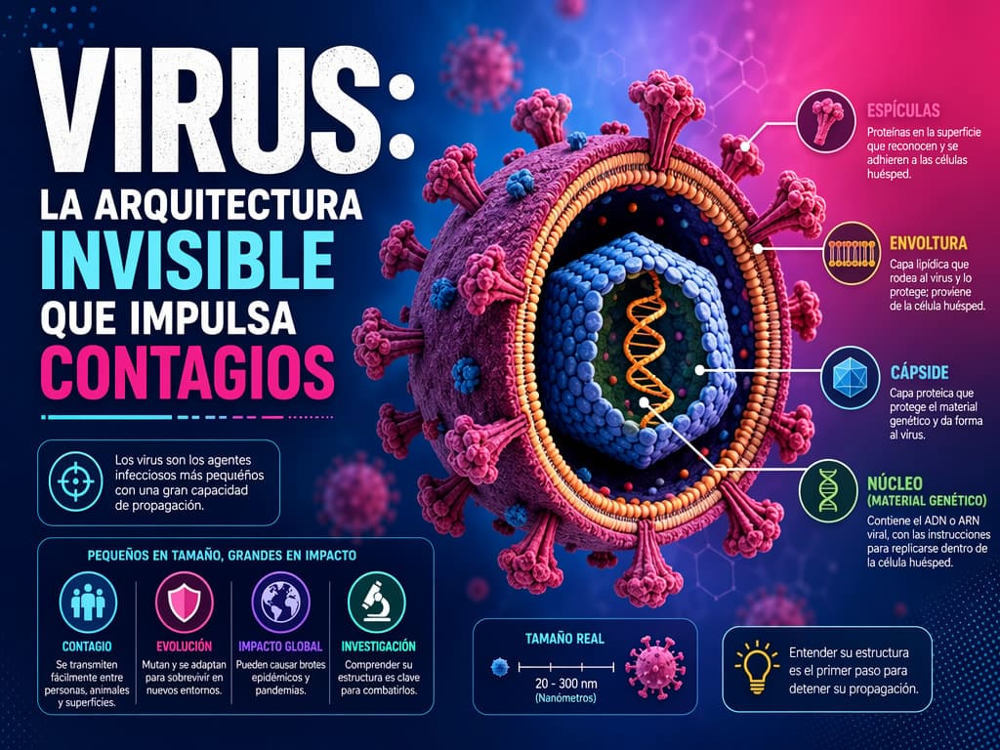
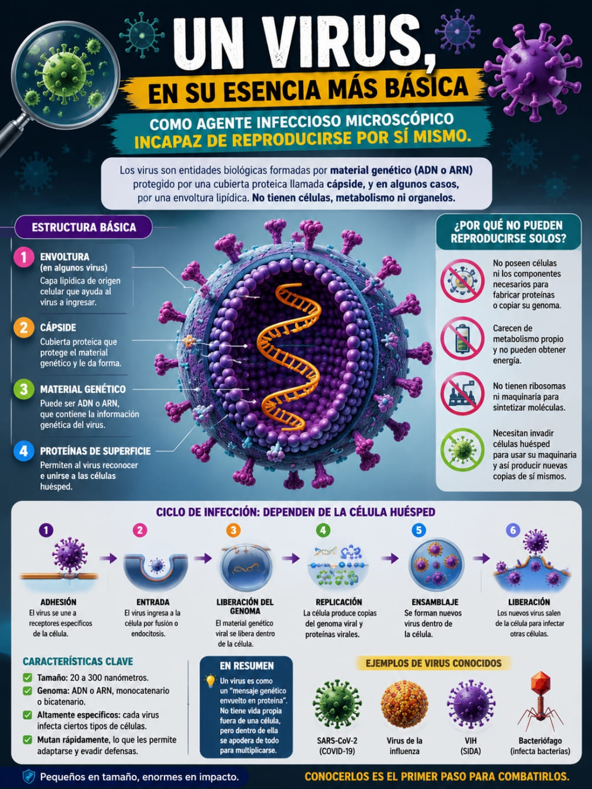
La estructura de un virus, aunque aparentemente simple, es ingeniosamente diseñada para cumplir su propósito principal: la replicación. En su núcleo, todo virus es esencialmente material genético, ya sea ADN (ácido desoxirribonucleico) o ARN (ácido ribonucleico), encapsulado por una capa protectora. Este material genético contiene las instrucciones para crear nuevas copias del virus.
El principio de funcionamiento de un virus se basa en su total dependencia de las células huésped para su replicación. Un virus es un parásito intracelular obligado. No posee la maquinaria celular necesaria para llevar a cabo procesos metabólicos o para reproducirse por sí mismo. Una vez que el virus infecta una célula, utiliza la maquinaria molecular de esa célula para transcribir y traducir su propio material genético, produciendo así las proteínas virales necesarias y replicando su genoma.
Los componentes principales de un virus son el genoma y la cápside. El genoma viral puede ser de cadena simple o doble, lineal o circular, y su tamaño varía considerablemente entre los diferentes tipos de virus. La cápside es una cubierta proteica que rodea y protege el genoma. Está compuesta por subunidades proteicas llamadas capsómeros, que se ensamblan de manera específica para formar la estructura de la cápside, como la icosaédrica (con forma de poliedro regular de 20 caras) o la helicoidal (con forma de espiral). Algunos virus, especialmente los de animales, poseen una envoltura lipídica externa, derivada de la membrana celular del huésped, que rodea a la cápside.
Una vez dentro de la célula huésped, el proceso interno más crucial es la replicación de su genoma y la producción de nuevas proteínas virales. El material genético del virus dirige a la maquinaria celular para que fabrique los componentes necesarios para ensamblar nuevas partículas virales. Este proceso, aunque simple en concepto,
puede ser altamente eficiente, llevando a la producción de miles de nuevos virus a partir de una sola célula infectada. En algunos casos, esto puede culminar en la lisis (ruptura) de la célula huésped para liberar los virus recién formados, un caso real que vemos en enfermedades como la gripe.
Los procesos internos de replicación viral son complejos y varían según el tipo de virus, pero generalmente implican las siguientes etapas: adhesión a la célula huésped, penetración, desnudamiento (liberación del material genético), replicación del genoma y síntesis de proteínas virales, ensamblaje de nuevas partículas virales y liberación de los nuevos viriones de la célula huésped (mediante lisis o gemación). Por ejemplo, el virus de la gripe, un virus de ARN, utiliza enzimas virales y celulares para replicar su ARN y producir sus proteínas, que luego se ensamblan y emergen de la célula.
Los desafíos o limitaciones principales para los virus son la necesidad de encontrar y acceder a células huésped adecuadas, y la capacidad del sistema inmunitario del huésped para detectarlos y neutralizarlos. Sin embargo, su aplicación práctica en la investigación biomédica es inmensa.
Los virus modificados genéticamente se utilizan como herramientas para la terapia génica, entregando material genético terapéutico a células específicas. Además, el estudio de los virus ha sido fundamental para comprender la biología celular y el desarrollo de vacunas, una de las aplicaciones prácticas más significativas en la salud pública.
A pesar de sus otros éxitos, Louis Pasteur (1822–1895) no pudo encontrar un agente causante de la rabia y especuló sobre un patógeno demasiado pequeño para ser detectado con un microscopio. En 1884, el microbiólogo francés Charles Chamberland (1851–1931) inventó un filtro, conocido hoy como el filtro de Chamberland , que tenía poros más pequeños que las bacterias. Por lo tanto, podía pasar una solución que contenía bacterias a través del filtro y eliminarlas por completo de la solución.
Los virus son entidades extraordinariamente simples pero increíblemente eficaces en su capacidad para perpetuarse. El concepto fundamental de la replicación viral radica en su dependencia absoluta de la maquinaria celular del huésped. Al carecer de ribosomas, enzimas metabólicas y la capacidad de generar energía por sí mismos, los virus deben secuestrar las células para producir nuevas partículas virales. Este proceso, conocido como ciclo de replicación viral, es esencialmente una toma de control de la fábrica celular.
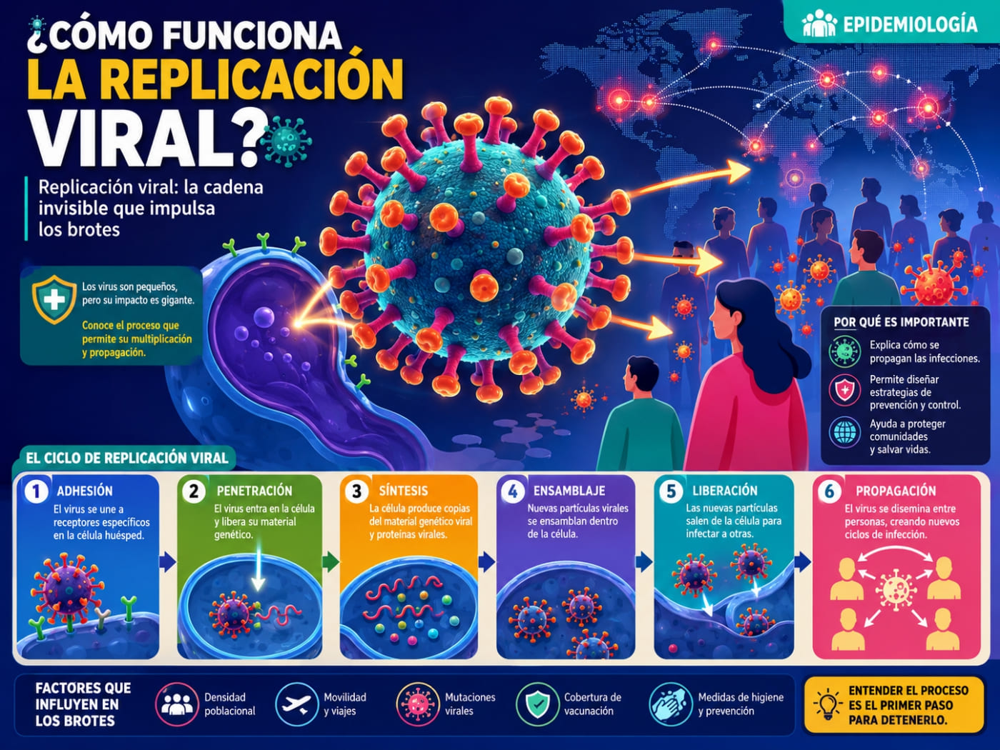
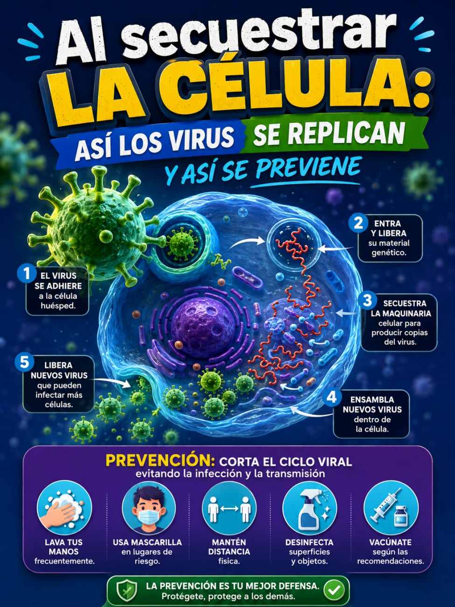
El proceso comienza con la adhesión del virus a la superficie de una célula huésped susceptible. Los virus poseen proteínas en su superficie (el componente principal conocido como envoltura o cápside) que se unen específicamente a receptores presentes en la membrana celular. Una vez unido, el virus introduce su material genético (ADN o ARN) en el citoplasma o núcleo de la célula. Este paso, la penetración, puede ocurrir por fusión de membranas virales y celulares, o mediante endocitosis inducida por el virus.
Una vez dentro, el virus libera su genoma, y aquí es donde el principio de funcionamiento se vuelve crucial: el material genético viral dirige a la maquinaria celular del huésped. Utilizando las enzimas, ribosomas y precursores de la célula, el genoma viral se replica y se transcribe (si es necesario) para producir ARNm viral. Este ARNm viral luego se traduce para sintetizar las proteínas virales, que incluyen las estructurales que formarán la nueva cápside y las enzimas necesarias para la replicación del genoma.
Los procesos internos de la célula se desvían para satisfacer las demandas virales. Los componentes virales recién sintetizados se ensamblan para formar nuevas partículas virales, un proceso conocido como ensamblaje. Finalmente, las nuevas partículas virales son liberadas de la célula huésped. Dependiendo del tipo de virus, esta liberación puede ocurrir por lisis celular (rompiendo la célula), lo que mata al huésped, o por gemación, donde el virus "brota" de la membrana celular, a menudo sin matar inmediatamente a la célula.
Este ciclo de replicación es un ejemplo fascinante de cómo un organismo parasitario puede explotar recursos externos. Comprender este ciclo no solo es fundamental para la virología básica, sino que también tiene aplicaciones prácticas directas en el desarrollo de antivirales. Al identificar las etapas clave de la replicación, se pueden
diseñar fármacos que interfieran selectivamente con uno o varios de estos pasos, bloqueando así la propagación viral. Por ejemplo, algunos antivirales inhiben la replicación del genoma, mientras que otros bloquean la entrada del virus a la célula o su liberación. El estudio de la replicación viral en organismos como el bacteriófago $\lambda$ (lambda) ha sido instrumental en el desarrollo de técnicas de ingeniería genética y la biología molecular moderna.
La replicación es la fase que implica la síntesis de ARN mensajero (ARNm) vírico en todos los virus con rasgos de ARN positivos, la síntesis de proteínas víricas, el ensamblaje de proteínas víricas y la replicación del genoma viral. El proceso de replicación es esencial para mantener la estabilidad de la información genética contenida en el ADN.
Esta replicación utiliza enzimas idénticas a las involucradas en la replicación del ADN celular y una característica común es la presencia de estructuras circulares temporales por lo menos en algunas de dicho proceso.
A pesar de los logros de los científicos en los últimos cien años, los virus continúan planteando nuevas amenazas y desafíos.
Los virus de ADN, también conocidos como virus desoxirribonucleicos, son entidades biológicas fascinantes que utilizan el ácido desoxirribonucleico (ADN) como su material genético. A diferencia de los virus de ARN, su genoma de ADN les confiere una notable estabilidad y les permite interactuar de manera específica con la maquinaria celular del huésped. El concepto fundamental es que replican su ADN y lo utilizan para dirigir la producción de nuevas partículas virales.
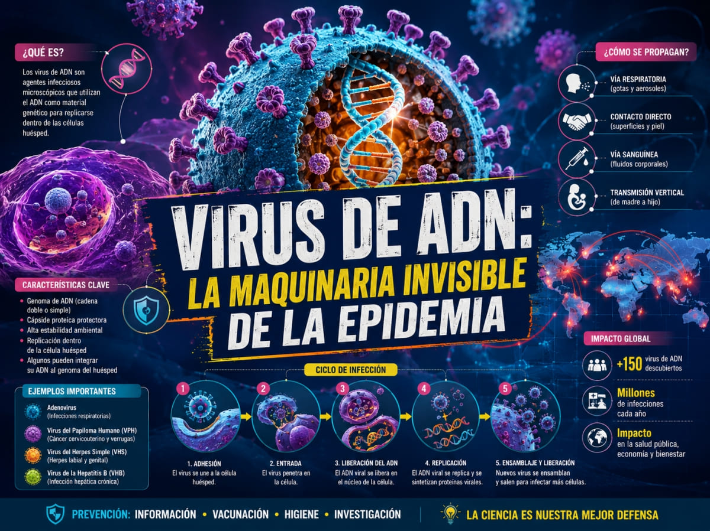
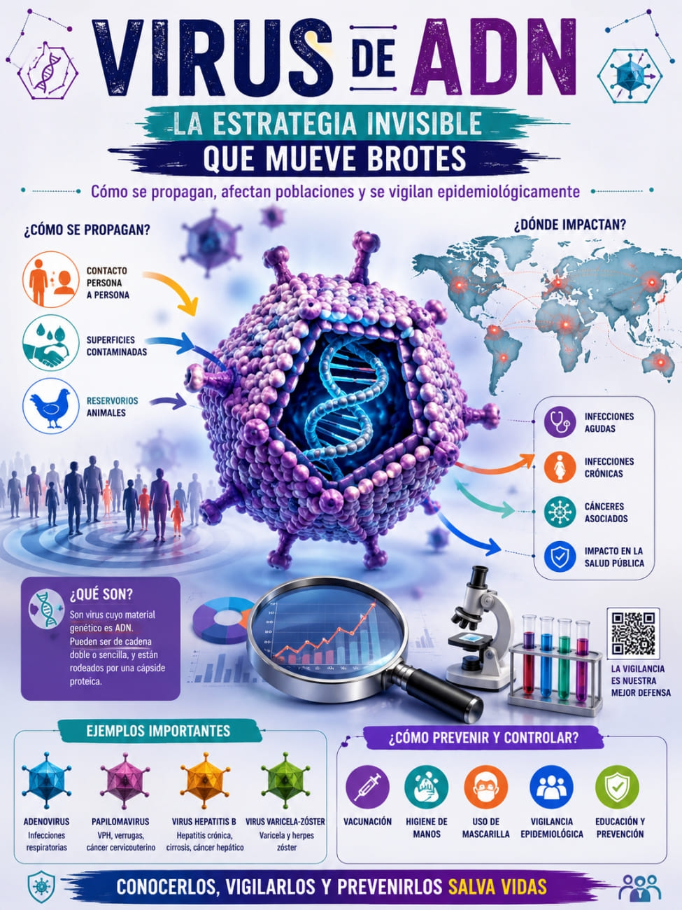
Los componentes principales de un virus de ADN son su genoma de ADN, encapsulado dentro de una cubierta proteica llamada cápside. Algunos virus de ADN más complejos también poseen una envoltura lipídica externa, derivada de la membrana celular del huésped, que rodea a la cápside. Esta estructura les permite adherirse a las células y facilitar la entrada.
El principio de funcionamiento de los virus de ADN se basa en la replicación de su material genético en el núcleo o citoplasma de la célula huésped. Una vez que el virus infecta una célula, inyecta su ADN y utiliza las enzimas y ribosomas de la célula para transcribir y traducir sus genes. Esto lleva a la síntesis de proteínas virales y a la replicación del genoma de ADN, un proceso análogo a la replicación del ADN celular pero dirigido por el código genético viral. La replicación del ADN viral sigue pasos similares a los de la replicación celular, implicando la separación de las hebras y la síntesis de nuevas hebras complementarias.
Los procesos internos son críticos para la propagación viral. Tras la entrada en la célula, el ADN viral puede seguir diversas rutas. Algunos virus se integran en el genoma del huésped (profagos), mientras que otros permanecen como entidades separadas (episomas). Posteriormente, la transcripción del ADN viral a ARN mensajero ($ARNm$) permite la síntesis de las proteínas necesarias para ensamblar nuevas partículas virales. El ensamblaje y la liberación de estos nuevos virus marcan el fin del ciclo de infección, a menudo provocando la lisis o muerte de la célula huésped.
Existen diversas aplicaciones prácticas y casos reales asociados a los virus de ADN. Por ejemplo, algunos virus de ADN, como los adenovirus, se investigan como vectores virales en terapias génicas y vacunas, aprovechando su capacidad para introducir material genético en células. Un ejemplo clásico es la familia de virus Herpesviridae, que
incluye patógenos humanos como el virus del herpes simple (VHS) y el virus de la varicela-zóster. La comprensión de su ciclo de replicación es crucial para el desarrollo de antivirales que interfieran con enzimas específicas, como las ADN polimerasas virales. A pesar de su utilidad potencial, los virus de ADN también presentan desafíos o limitaciones. Su tamaño y complejidad a menudo requieren mecanismos de replicación más elaborados que los virus de ARN, y la integración en el genoma del huésped puede tener consecuencias imprevistas, como la mutagénesis o la transformación celular. Además, la alta fidelidad de la replicación del ADN viral, aunque beneficiosa para la estabilidad, puede hacerlos menos propensos a mutaciones rápidas en comparación con algunos virus de ARN, lo que podría influir en su adaptabilidad evolutiva en ciertos contextos.
Los virus del herpes humano de la familia Herpesviridae se caracterizan por tener un genoma de ADN lineal de doble cadena, una cápside icosaédrica rodeada por un tegumento, una capa amorfa de proteínas que rodea la cápside, y una envoltura formada por poliaminas, lípidos y glicoproteínas. El virus del herpes simple (VHS) se distribuye en todo el mundo y tiene la capacidad de infectar células epiteliales y neuronales estableciendo una infección persistente latente en el sistema nervioso.
Para el herpes simple, presentamos el siguiente video:
Proteína portal del virus de Epstein-Barr, resuelto por microscopía crioelectrónica a una resolución de 3,5 Å.
Los virus de ARN representan una fascinante categoría dentro del mundo viral, caracterizados principalmente por su material genético compuesto por ácido ribonucleico (ARN) en lugar de ADN. Este concepto fundamental es crucial, ya que dicta la forma en que estos virus se replican y interactúan con sus huéspedes. A diferencia de los virus de ADN, que pueden integrar su genoma directamente en el ADN de la célula hospedadora, los virus de ARN deben emplear mecanismos más complejos para transcribir y replicar su material genético.
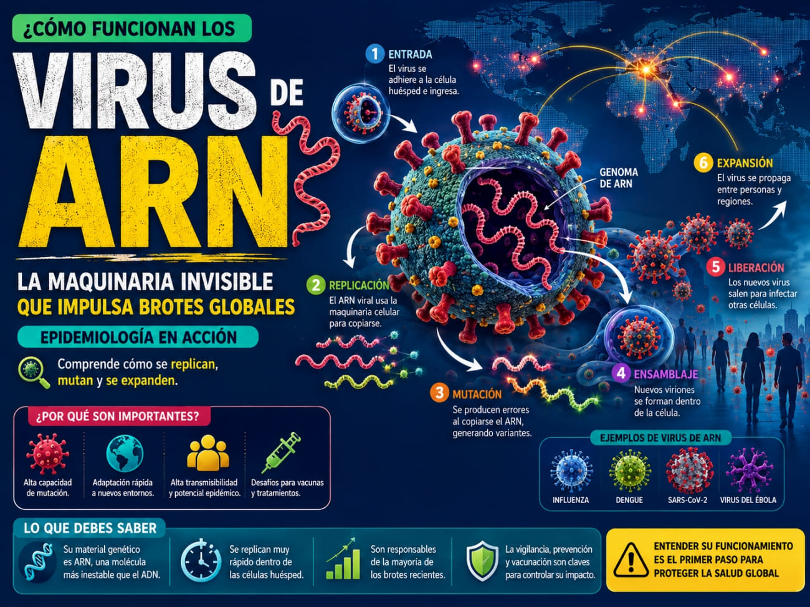
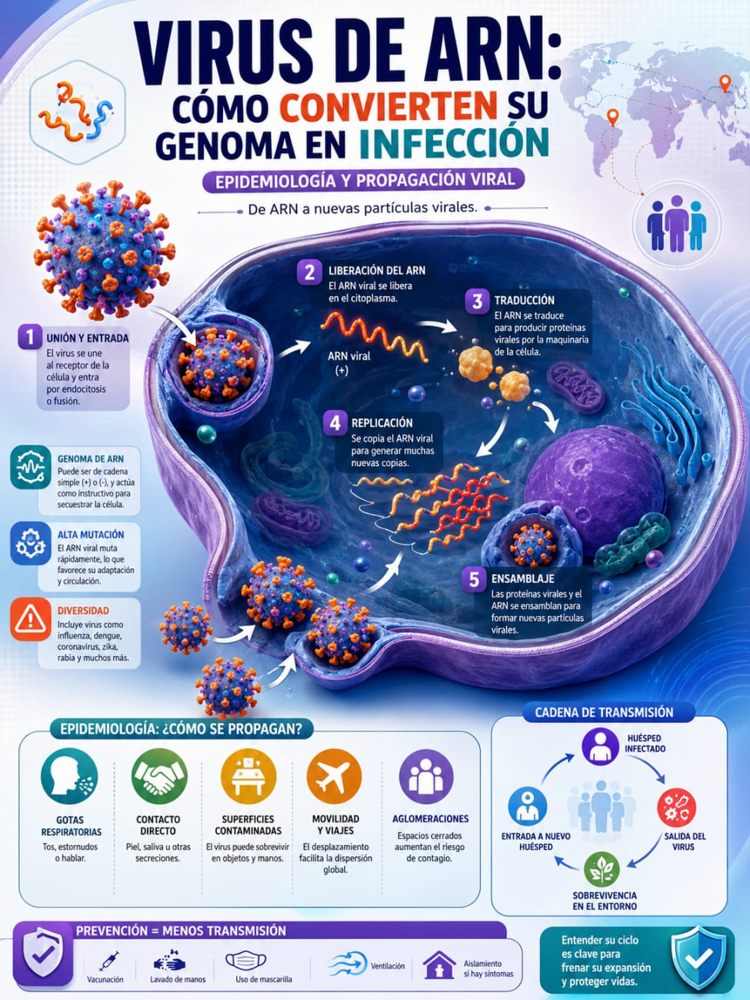
Los componentes principales de un virus de ARN suelen incluir una cadena de ARN, una cápside proteica que protege el ARN, y en algunos casos, una envoltura lipídica derivada de la membrana de la célula hospedadora.
El principio de funcionamiento de los virus de ARN gira en torno a la necesidad de convertir su genoma de ARN en una forma que la maquinaria celular pueda leer y replicar, o utilizar directamente para la síntesis de nuevas partículas virales. Para aquellos virus de ARN cuyo genoma es de sentido positivo (ssRNA+), el ARN actúa directamente como ARN mensajero (ARNm), pudiendo ser traducido por los ribosomas de la célula hospedadora para producir proteínas virales, incluyendo las enzimas necesarias para la replicación del ARN. Los virus de ARN de sentido negativo (ssRNA-) son más complejos, ya que su ARN no puede ser traducido directamente. Necesitan codificar una enzima ARN polimerasa dependiente de ARN (RdRp), que transcribirá su genoma de ARN a ARN mensajero complementario (ARNm) antes de que la traducción pueda ocurrir.
Los procesos internos de replicación varían significativamente. En los retrovirus, como el VIH, el ARN genómico es transcripto inversamente a ADN mediante una enzima viral llamada transcriptasa inversa. Este ADN viral se integra luego en el genoma del huésped, desde donde se transcribe de vuelta a ARN para formar nuevos virus. En otros virus de ARN, como el virus de la influenza, el genoma está
fragmentado y la replicación se lleva a cabo en el núcleo de la célula hospedadora, a diferencia de muchos virus de ADN que se replican en el citoplasma.
Casos reales o ejemplos notables incluyen la gripe (causada por virus de la familia Orthomyxoviridae), el resfriado común (causado por rinovirus y coronavirus), la hepatitis C (virus de la hepatitis C, VHC), el sarampión (virus del sarampión), la poliomielitis (poliovirus), y el VIH (virus de la inmunodeficiencia humana). La rápida tasa de mutación de muchos virus de ARN, debido a la falta de un mecanismo de corrección de errores en sus ARN polimerasas, presenta un desafío significativo en el desarrollo de vacunas y tratamientos antivirales efectivos a largo plazo, ya que pueden evolucionar rápidamente para evadir la respuesta inmune o la acción de los fármacos.
A pesar de los desafíos, el estudio de los virus de ARN ha conducido a importantes aplicaciones prácticas y beneficios. La transcriptasa inversa, una enzima clave en la replicación de retrovirus, se ha convertido en una herramienta molecular invaluable en la investigación biomédica, permitiendo la síntesis de ADN a partir de ARN en técnicas como la Reacción en Cadena de la Polimerasa (PCR) y la clonación génica. La replicación viral también es fundamental para el desarrollo de terapias antivirales dirigidas, como los inhibidores de proteasa y los inhibidores de transcriptasa inversa, que han mejorado drásticamente el manejo de enfermedades como el VIH.
La familia Filoviridae es una familia de virus del orden Mononegavirales, cuyo nombre proviene del latín filum (hilo en español), que se refiere a la morfología de los filovirus. Esta familia de virus se caracteriza por poseer como genoma ARN lineal monocatenario de sentido negativo, infecta principalmente a primates. El virus más conocido de este grupo es el Ebolavirus, que provoca la enfermedad ébola, mientras que del resto de géneros no se conoce todavía mucho.
El siguiente video de History Latinoamérica, titulado "20 AÑOS DE HISTORIA – 2014, Ébola, el viejo enemigo", tiene la siguiente descripción: "Este rebrote del letal virus afecta a parte del continente africano. Contagiarse era sinónimo de muerte, con dolores corporales, fiebres, vómitos y diarrea".
Las proteínas no estructurales incluyen la ARN polimerasa (L), el precursor de la glicoproteína (GP) y dos proteínas virales, NP y VP35, que juegan un papel en la replicación y transcripción del virus.
Cuando un virus invade nuestro organismo, desata una compleja y fascinante respuesta inmunitaria diseñada para neutralizar la amenaza y proteger nuestras células. Este proceso se puede dividir en varias etapas clave, que trabajan de forma coordinada para erradicar al invasor. Inicialmente, las células infectadas liberan señales de alarma, como las citoquinas, que alertan al sistema inmunitario de la presencia de un agente patógeno. Estas señales atraen a células especializadas, como los macrófagos y las células dendríticas, que son los primeros en responder.
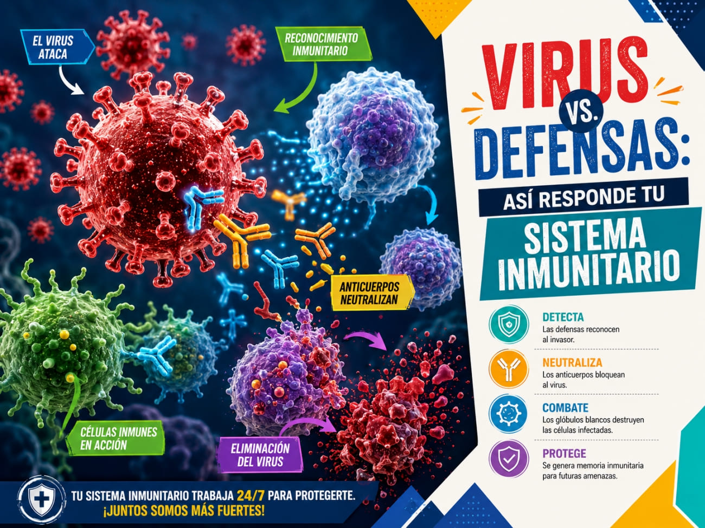
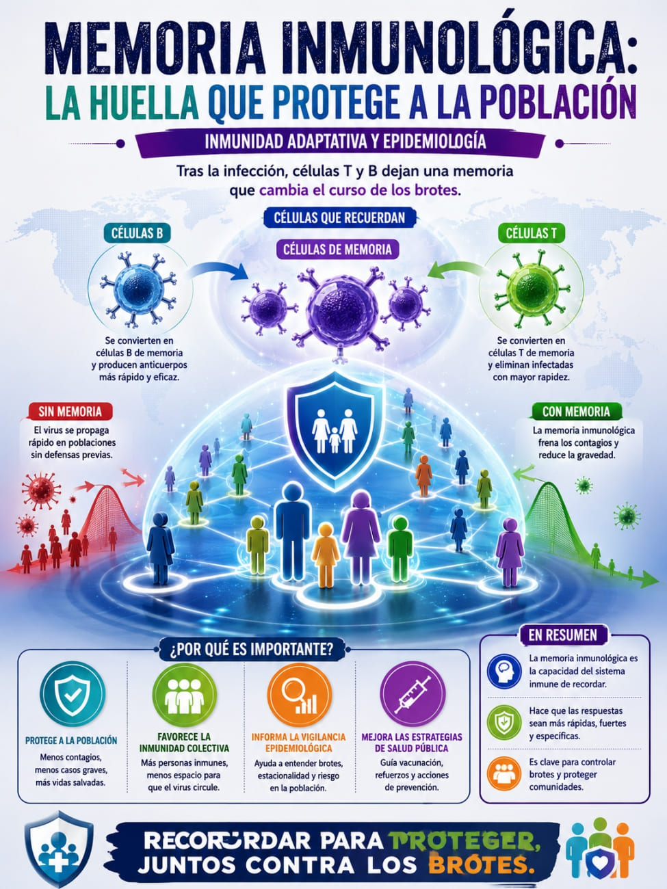
Estos centinelas celulares actúan como detectores del patógeno. Los macrófagos son capaces de fagocitar (engullir y destruir) partículas virales y células infectadas. Las células dendríticas, por su parte, son cruciales para la inmunidad adaptativa, ya que procesan fragmentos del virus (antígenos) y los presentan a otras células inmunitarias, como los linfocitos T, desencadenando una respuesta más específica y potente. Este reconocimiento temprano y la presentación de antígenos son el concepto fundamental para iniciar la lucha contra el virus.
La inmunidad innata es la primera línea de defensa. Se activa rápidamente y no es específica; es decir, responde de manera similar a diferentes tipos de virus. Los interferones son un componente vital en esta etapa. Estas proteínas, liberadas por las células infectadas, interfieren con la replicación viral e impiden que el virus se propague a células sanas. Además, las células Natural Killer (NK), otro componente de la inmunidad innata, son capaces de reconocer y eliminar células infectadas sin necesidad de una previa sensibilización.
Posteriormente, entra en juego la inmunidad adaptativa, que es más lenta pero altamente específica y genera memoria. Los linfocitos B se diferencian en células plasmáticas que producen anticuerpos. Estos anticuerpos son proteínas con una forma muy precisa que se unen a los antígenos virales, marcándolos para su destrucción por otras células o neutralizando directamente al virus al impedir que infecte nuevas células. Al mismo tiempo, los linfocitos T citotóxicos (una subpoblación de linfocitos T) reconocen y destruyen las células que han sido infectadas por el virus, eliminando así los "fábricas" del patógeno.
Un principio de funcionamiento clave de la inmunidad adaptativa es la memoria inmunológica. Tras una infección, algunas células T y B se
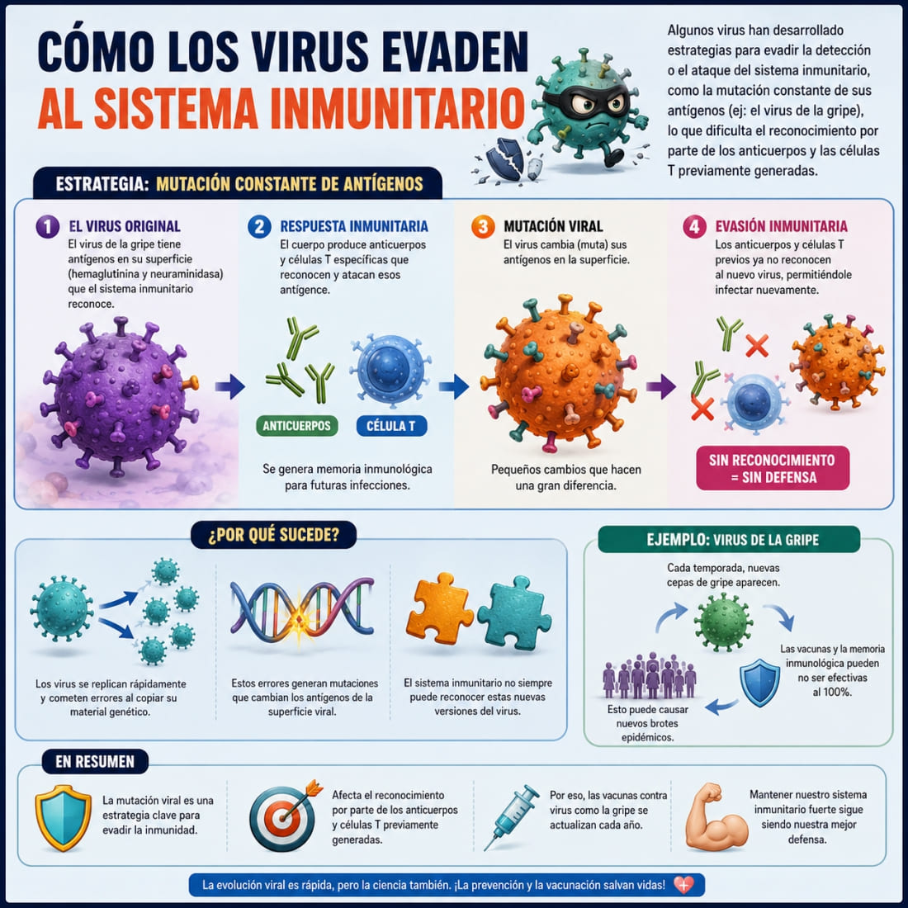
convierten en células de memoria. Estas células permanecen en el organismo y, si el mismo virus intenta reingresar, responden de manera mucho más rápida y eficaz, a menudo impidiendo que desarrollemos síntomas o que la enfermedad sea muy leve. Este es el beneficio principal de la vacunación, que imita este proceso al exponer al cuerpo a formas inofensivas de patógenos para generar esta memoria protectora.
A pesar de su eficacia, la respuesta inmunitaria frente a los virus enfrenta desafíos. Algunos virus han desarrollado estrategias para evadir la detección o el ataque del sistema inmunitario, como la mutación constante de sus antígenos (ej: el virus de la gripe), lo que dificulta el reconocimiento por parte de los anticuerpos y las células T previamente generadas. Otros virus pueden inhibir la producción de interferones o integrar su material genético en el ADN de la célula huésped (ej: el VIH), volviéndose muy difíciles de erradicar por completo. La complejidad de estas interacciones subraya la necesidad de continuar investigando para comprender mejor y potenciar nuestras defensas naturales.
Con respecto al VIH, este solo se puede transmitir a través del contacto entre fluidos corporales que poseen una alta concentración viral. El virus no se transmite de manera casual. De acuerdo con los CDC (Centro para el control y la prevención de enfermedades) de Estados Unidos, no se han encontrado casos en que abrazos, besos secos o saludos con las manos hayan sido causantes de infección.
El siguiente video muestra una animación 3D para comprender la función de las proteínas de fusión viral tipo I, involucradas en la infección celular, y tomando el virus de la inmunodeficiencia humana tipo I (VIH-1) como ejemplo de un lentivirus/retrovirus importante:
La siguiente estructura atómica fue obtenida del Virus de la inmunodeficiencia humana tipo 1 (ZAIRE 6 AISLADO).
Uno de los virus más conocidos de la familia Retroviridae es el virus de la inmunodeficiencia humana (VIH), que es un lentivirus, que causa la infección por VIH.
Las vacunas representan una de las herramientas más poderosas y exitosas de la medicina moderna en la lucha contra las enfermedades virales. Su concepto fundamental radica en entrenar al sistema inmunológico del cuerpo para que reconozca y combata un patógeno específico, en este caso, un virus, antes de que cause una enfermedad grave. En esencia, una vacuna introduce una versión debilitada, inactiva o una parte específica del virus en el organismo, lo que genera una respuesta inmune sin provocar la infección en sí.
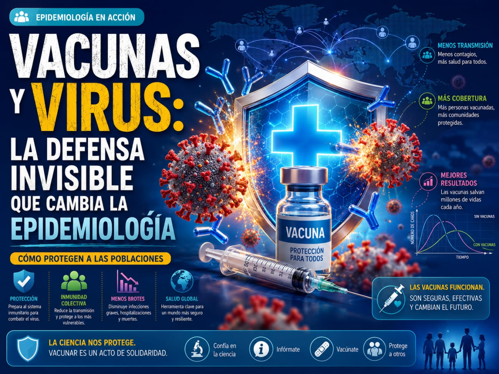
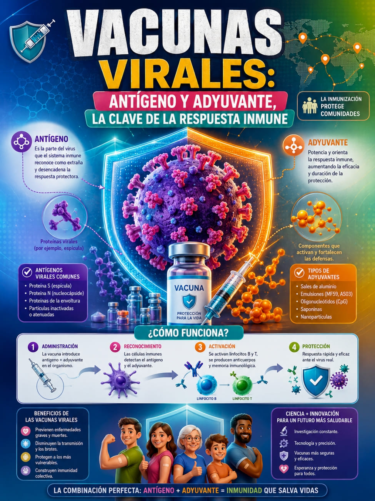
Los componentes principales de una vacuna viral suelen ser el antígeno, que es la molécula (a menudo una proteína) del virus que el sistema inmunitario reconoce como extraña, y a veces un adyuvante. El adyuvante es una sustancia que potencia la respuesta inmune al antígeno, haciendo que la vacuna sea más efectiva. Existen diversos tipos de vacunas virales, incluyendo las de virus atenuados (virus vivos pero debilitados), virus inactivados (virus muertos), subunidades proteicas (solo la parte del virus que desencadena la respuesta inmune) y vacunas de vectores virales (donde se utiliza un virus inofensivo para transportar el material genético del virus objetivo). El principio de funcionamiento es el mismo para todas: presentar al sistema inmunitario la "firma" del virus.
Una vez administrada, la vacuna desencadena una serie de procesos internos. Las células inmunitarias, como las células presentadoras de antígenos, capturan el antígeno vacunal y lo presentan a otras células inmunitarias, especialmente a los linfocitos T y B. Los linfocitos B comienzan a producir anticuerpos, proteínas que se unen específicamente al antígeno viral, neutralizando el virus o marcándolo para su destrucción. Simultáneamente, los linfocitos T de memoria y los linfocitos B de memoria se generan. Estas células de memoria son cruciales, ya que permanecen en el cuerpo a largo plazo y permiten una respuesta mucho más rápida y robusta en caso de una futura exposición al virus real.
Las aplicaciones prácticas de las vacunas contra virus son inmensas y han erradicado o controlado enfermedades devastadoras. La vacuna contra la viruela, una enfermedad que causó millones de muertes a lo largo de la historia, es un ejemplo paradigmático de éxito, llevando a su erradicación mundial. De manera similar, las vacunas contra la poliomielitis han reducido drásticamente la incidencia de esta enfermedad paralizante. Más recientemente, las vacunas contra el
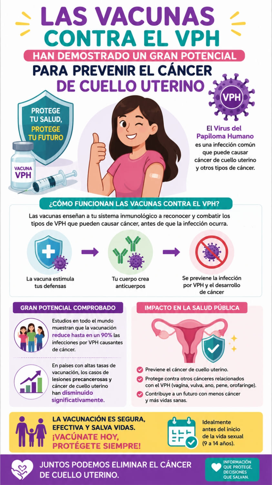
virus del papiloma humano (VPH) han demostrado un gran potencial para prevenir el cáncer de cuello uterino, y las vacunas contra la gripe son vitales para mitigar la morbilidad y mortalidad estacional.
Los beneficios y ventajas de la vacunación son claros: protección individual contra enfermedades graves y sus complicaciones, inmunidad colectiva (o de rebaño) que protege a quienes no pueden ser vacunados (bebés, personas inmunocomprometidas) al reducir la circulación del virus, y la prevención de brotes epidémicos y pandemias. A pesar de su éxito, existen desafíos o limitaciones, como la necesidad de desarrollar nuevas vacunas para virus emergentes (como el SARS-CoV-2), la posibilidad de que los virus muten y evadan la respuesta inmune generada por vacunas existentes, y la importancia de la distribución equitativa y la aceptación pública para alcanzar altos niveles de cobertura vacunal. La investigación continua se enfoca en mejorar la duración de la inmunidad y la eficacia contra variantes virales.
Hay varias vacunas contra la hepatitis. La vacuna contra la hepatitis A y la vacuna contra la hepatitis B son las dos vacunas más comunes. La vacuna contra la hepatitis A está hecha de una forma inactivada del virus de la hepatitis A, mientras que la vacuna contra la hepatitis B está hecha de una parte del virus de la hepatitis B llamada antígeno del superficie. También existe una vacuna combinada contra la hepatitis A y la hepatitis B.
El siguiente video está relacionado con estas vacunas:
Los miembros de la familia Coronaviridae, un grupo monofilético en el orden Nidovirales, son virus de ARN de cadena positiva envueltos de tres clases de vertebrados: mamíferos (coronavirus y torovirus), aves (coronavirus) y peces (bafinivirus).
El diagnóstico de las infecciones virales es un proceso crucial para identificar la presencia de un virus específico en un paciente, lo que permite un tratamiento adecuado, el seguimiento de brotes y la prevención de la propagación. El concepto fundamental radica en detectar la respuesta del huésped al virus o el material genético o componentes estructurales del propio virus. Esto se logra a través de una variedad de técnicas de laboratorio que aprovechan las diferencias entre el huésped y el agente infeccioso.
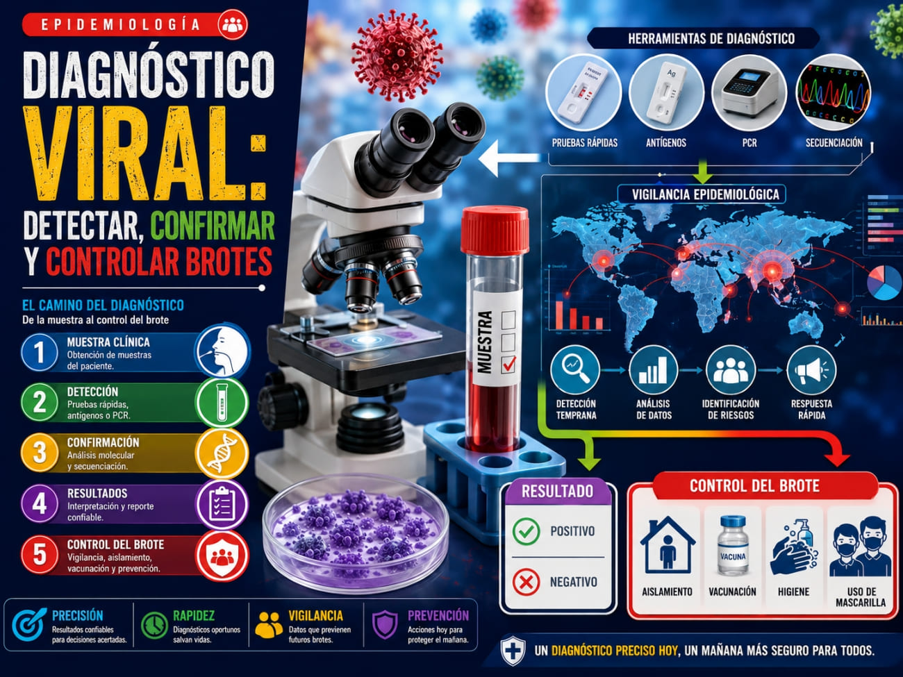
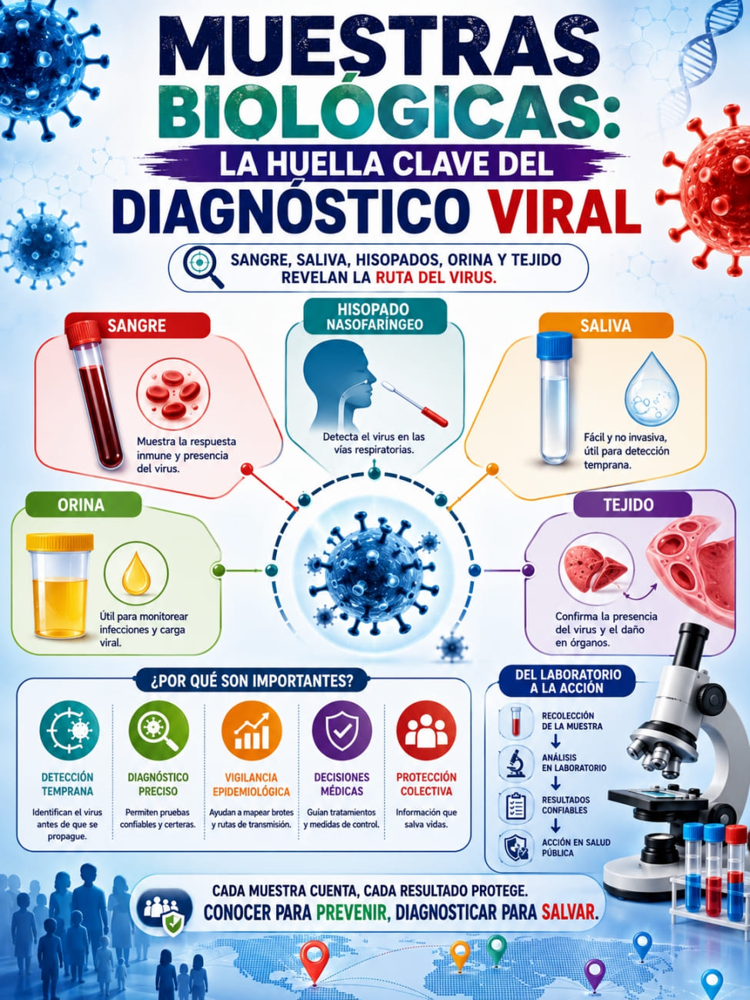
Uno de los componentes principales en el diagnóstico viral son las muestras biológicas obtenidas del paciente, que pueden incluir sangre, saliva, hisopados nasofaríngeos, orina o tejido. A partir de estas muestras, se aplican diferentes métodos. Las técnicas de detección de antígenos buscan identificar proteínas virales específicas. Estas pruebas suelen ser rápidas y asequibles, pero pueden tener una sensibilidad menor en comparación con otros métodos, lo que significa que podrían no detectar virus en etapas muy tempranas o en bajas concentraciones.
Por otro lado, la detección de anticuerpos se enfoca en la respuesta inmunitaria del huésped. Cuando un virus infecta, el cuerpo produce anticuerpos para combatirlo. Identificar estos anticuerpos en la sangre de un paciente puede indicar una infección pasada o presente. El principio de funcionamiento de estas pruebas se basa en la reacción antígeno-anticuerpo, donde un antígeno viral conocido se une a los anticuerpos presentes en la muestra del paciente, o viceversa. Un ejemplo clásico son las pruebas serológicas para VIH o hepatitis.
Las técnicas de detección de material genético viral, como la Reacción en Cadena de la Polimerasa (PCR), son particularmente poderosas. El proceso interno de la PCR implica la amplificación exponencial de secuencias de ADN o ARN viral específicas. Si el genoma viral está presente en la muestra, la PCR lo multiplicará millones de veces, haciéndolo detectable. Esto permite una identificación muy sensible y específica del virus, incluso en cantidades ínfimas, lo que la convierte en una herramienta invaluable para diagnosticar infecciones agudas y emergentes, como la COVID-19. La fórmula que describe el crecimiento exponencial de las copias de ADN en la PCR ideal se asemeja a:
$$N(t) = N_0 \cdot 2^n$$Donde $N(t)$ es el número de copias de ADN en el ciclo $t$, $N_0$ es el número inicial de copias, y $n$ es el número de ciclos de amplificación.
Los beneficios y ventajas del diagnóstico viral son innumerables: permiten un tratamiento temprano y específico, previniendo complicaciones severas; ayudan a controlar y rastrear brotes epidémicos y pandémicos mediante la identificación de fuentes y rutas de transmisión; y son esenciales para la investigación y el desarrollo de vacunas y antivirales. Sin embargo, existen desafíos o limitaciones, como la necesidad de personal capacitado, equipos especializados y costos asociados a ciertas pruebas. Además, la variabilidad genética de los virus puede, en ocasiones, dificultar la detección si las pruebas no se actualizan para reconocer nuevas cepas o mutaciones.
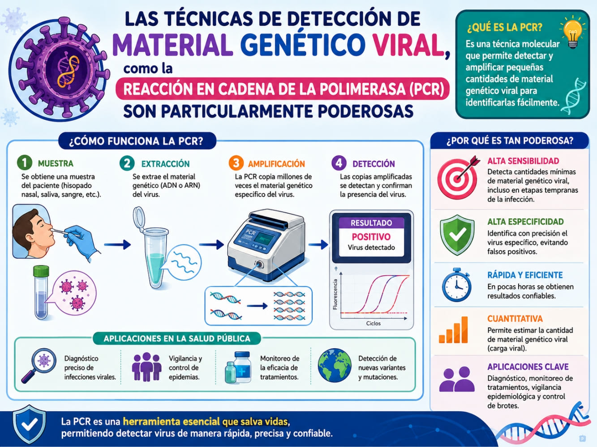
La mayoría de las infecciones no manifiestan ningún síntoma y se resuelven espontáneamente. En algunas personas, la infección por VPH es persistente y provoca verrugas o lesiones premalignas. Estas lesiones premalignas aumentan el riesgo de cáncer de cuello uterino, vulva, vagina, pene, ano y boca o cuello. Prácticamente todos los casos de cáncer de cuello uterino son causados por el VPH. Alrededor del 70% de estos casos son causados por dos tipos: HPV16 y HPV18. El VPH también se relaciona con el 60–90 % de los casos de otros tipos de cáncer.
La oncoproteína E6 del virus del papiloma humano (VPH) se dirige a ciertos supresores de tumores como MAGI-1 para su degradación.
La prevención de las enfermedades virales es un campo multifacético que se apoya en nuestra comprensión de cómo los virus interactúan con los organismos y cómo se transmiten. El concepto fundamental radica en interrumpir el ciclo de vida viral o impedir su entrada en el huésped. Esto se logra principalmente a través de dos enfoques: el fortalecimiento de las defensas naturales del organismo y la limitación de la exposición al virus.
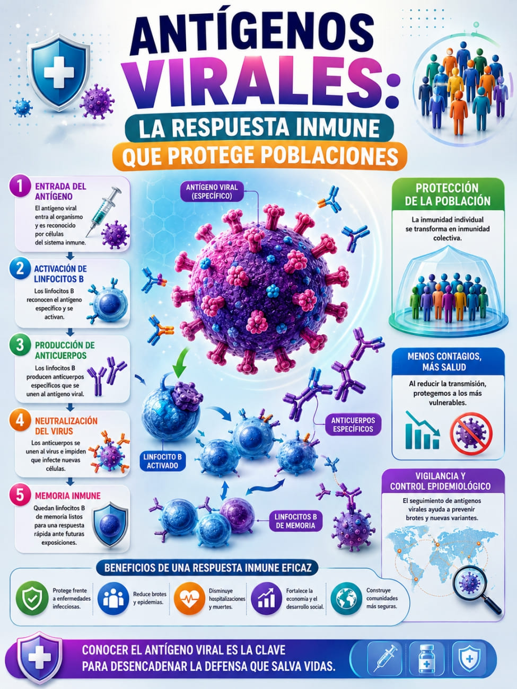
Los componentes principales de la prevención viral incluyen las vacunas, las medidas de higiene y saneamiento, y el desarrollo de tratamientos antivirales que, si bien son curativos, también juegan un rol preventivo al reducir la replicación viral y, por ende, la transmisión. Las vacunas, por ejemplo, funcionan presentando al sistema inmunológico fragmentos del virus o virus atenuados, lo que permite generar una respuesta inmune sin causar la enfermedad. Esto crea una memoria inmunológica que, ante una exposición futura al patógeno real, permite una respuesta rápida y eficaz.
El principio de funcionamiento detrás de la prevención vacunal se basa en la inmunidad adquirida. Al exponer al cuerpo a un antígeno viral específico, las células del sistema inmune, como los linfocitos B, producen anticuerpos dirigidos contra ese antígeno. Estas moléculas de defensa se unen al virus, neutralizando su capacidad de infectar células o marcándolo para su destrucción por otras células inmunes. La eficacia de una vacuna se mide en términos de su capacidad para prevenir la infección, reducir la gravedad de la enfermedad o disminuir la transmisión comunitaria.
Las aplicaciones prácticas de la prevención de enfermedades virales son extensas y han tenido un impacto transformador en la salud pública global. La erradicación de la viruela, la drástica reducción de la polio y el control de enfermedades como el sarampión y la gripe son casos reales que demuestran el poder de las estrategias preventivas. Estas estrategias no solo salvan vidas, sino que también reducen la carga económica y social asociada a las pandemias y epidemias.
Sin embargo, la prevención de enfermedades virales también presenta desafíos y limitaciones. La evolución constante de los virus, con la aparición de nuevas cepas y mutaciones, puede comprometer la eficacia de vacunas y tratamientos existentes. Además, la logística
de distribución de vacunas en regiones remotas y la resistencia o desinformación sobre la vacunación son obstáculos significativos. La investigación continua es crucial para desarrollar vacunas de amplio espectro y estrategias de intervención innovadoras que puedan anticiparse a la variabilidad viral.
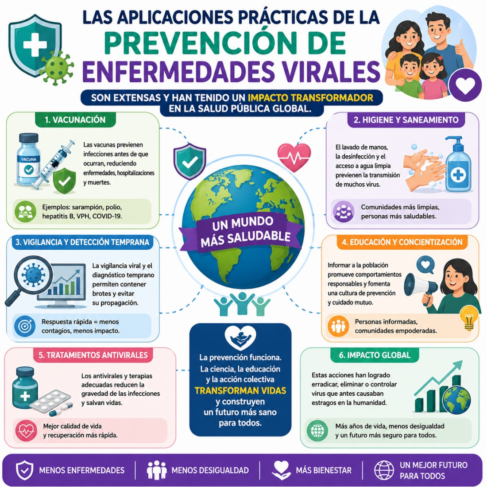
Año tras año, el mundo se enferma con un nuevo virus de la gripe. Muchas personas se infectan y otras tantas mueren. Al igual que otros virus, el de la gripe cambia constantemente. Esta mutación o variación antigénica suele ocasionar sólo cambios menores; por lo tanto, las compañías farmacéuticas logran contrarrestar la cepa de cada año con la vacuna adecuada. Sin embargo, según indican los registros históricos, cada 10 a 40 años el mundo sufre una pandemia de gripe que resulta de una variación antigénica mayor. El virus atraviesa una mutación tan drástica que el cuerpo humano ya no lo reconoce y se torna indefenso